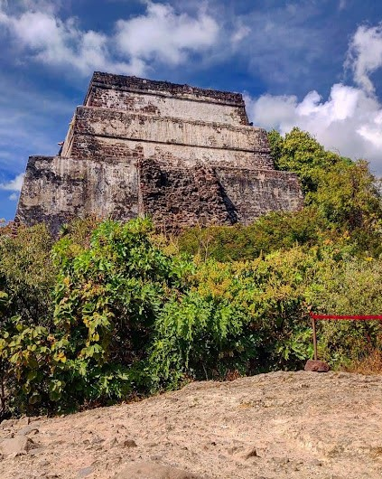
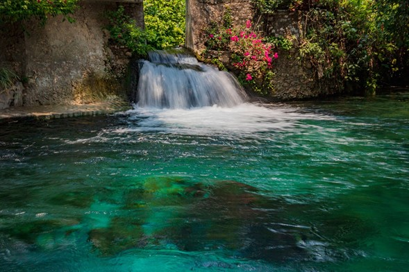

Lugares destacados

Pueblos mágicos
Descubre la magia viva de México en cada rincón. Tradiciones, colores y encanto que te enamoran desde el primer paso.
Zonas arqueológicas
Viaja al pasado y camina entre las huellas de antiguas civilizaciones. La historia te espera bajo cada piedra.
Balnearios y parques acuáticos
Sumérgete en la frescura natural de Morelos: aguas cristalinas, paisajes únicos y momentos inolvidables.